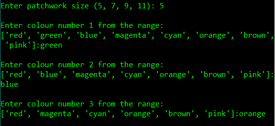
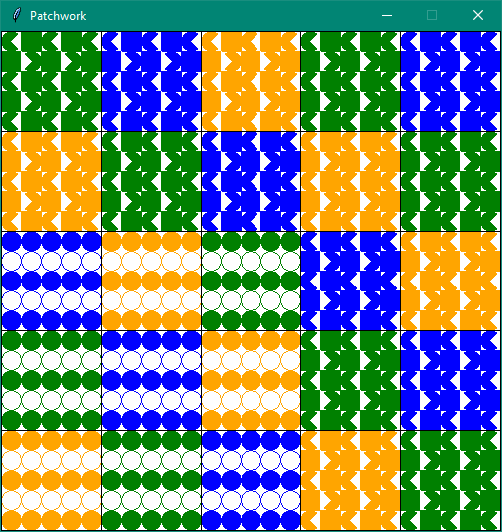
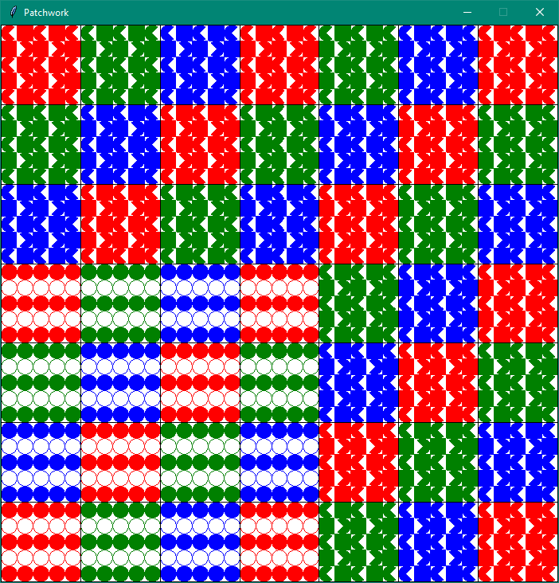
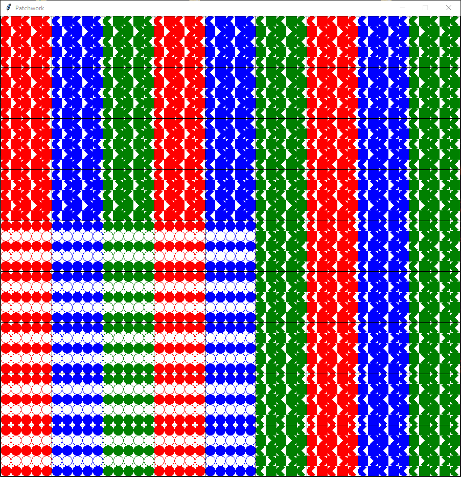
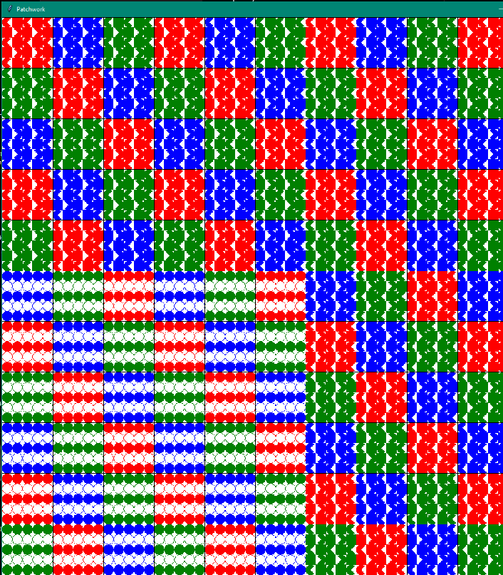

Introduction to Programming
In this unit I exlored fundamental programming concepts such as data types, classes and code quality while utilising the Python and Java programming languages.
Python Coursework
The Task
For the coursework involving Python, we were tasked with programming a 'Patchwork Sampler' using the John Zelle graphics package as defined by the given specification.
The primary requirements for the Patchwork Sampler were to:
- Accept user input for grid sizes 5x5, 7x7, 9x9 and 11x11.
- Accept user input for three unique colours from a range of eight.
- Draw the patches in the given pattern.
Additional features that we were encouraged to implement include:
- User interaction to swap the position of two tiles by clicking each of them.
- User interation to swap the pattern of any tile but keep the colour by double clicking a single tile.
Execution
Here is the code that forms the Patchwork Sampler. It is dependant on the graphics.py file linked above.
The program runs as expected and takes user input from the shell for the size of the grid and the three chosen colours.
 Improvements
One fatal error that can occur during runtime is: if a non-integer value is input when the grid size is requested. This is because the code I wrote attempts to convert the input string into and integer before checking whether the input string is valid. This could be rectified with a simple if else statement.
A minor issue with the way I drew the patchwork design is that the initial circle patches in the bottom right-hand-side of the window should be consistanly 3x3 regardless of patchwork size, however I misread the brief assumed the circle section would grow with the window.
  Java Coursework
The Task
For our Java based coursework, we were tasked with writing classes that could emulate a pizza ordering system. We were given template and starter classes which we needed to build off from to develop a functioning program. Code quality and design were also assessed.
The brief for the coursework can be found here.
The primary objectives were to:
- Take user input which considers the size, crust type, sauce and toppings of the pizza.
- Enter information for upto six pizzas.
- Display the pizzas within a window using the Canvas package.
- Consider the total cost of the order.
- Make use of Javdoc commenting.
We were also encouraged to:
- Enable the user to modify or remove any pizza.
- Enable the user to enter more than six pizzas, but maintaining the number of pizzas per window to six.
Execution
The program generally runs well and input validation is implemnted where needed.
Find the files used in my Java coursework here.
Improvements
One way in which my program could be improved would be to accomodate for users who desire no toppings. This was not an option I considered until the program was assessed.
Another instance in which the program could have been improved is to limit the number of windows displaying pizzas to one, regardless of the number of pizzas input. The user would then change between a series of 'screens' which would each display upto six pizzas.